Design Pattern
Table of Contents
1 原则
1.1 开闭原则
- Open Close Principle
- 对扩展开放，对修改关闭。
- 在程序需要进行扩展的时候，不能去修改原有的代码，以实现热插拔的效果。
- 关键步骤就是抽象化，而基类与子类的继承关系就是抽象化的具体实现。
1.2 里氏代换原则
- Liskov Substitution Principle
- 任何基类可以出现的地方，子类一定可以出现。
- 继承复用的基石。
- 只有当衍生类替换掉基类而软件单位的功能不受到影响时，基类才能真正被复用。
1.3 接口隔离原则
- Interface Segregation Principle）
- 使用多个隔离的接口，比使用单个接口要好。
- 降低类之间的耦合度。
1.4 迪米特法则
- Demeter Principle
- 最少知道原则。
- 一个实体应当尽量少地与其他实体之间发生相互作用，使得系统功能模块相对独立。
1.5 合成复用原则
- Composite Reuse Principle
- 尽量使用合成、聚合，而不是继承。
2 Creational
Creational patterns deal with class instantiation (object creation) mechanisms. The purpose is to create objects in a manner suitable to the situation, and avoid design problems or complexity.
| Abstract Factory | 抽象工厂 | Creates an instance of several families of classes |
|---|---|---|
| Builder | 建造者 | Separates object construction from representation |
| Factory Method | 工厂方法 | Creates an instance of several derived classes |
| Object Pool | Avoid acquisition and release of resources by recycling objects | |
| Prototype | 原型 | A fully initialized instance to be copied or cloned |
| Singleton | 单例 | A class of which only a single instance can exist |
2.1 Abstract Factory
The purpose of the Abstract Factory is to provide an interface for creating families of related objects, without specifying concrete classes. The Abstract Factory defines a Factory Method per product. Each Factory Method encapsulates the new operator and the concrete, platform-specific, product classes.
Client doesn't create platform objects directly, instead it instantiates the factory class which provides creation services for the entire platform family. The instantiation of factory class appears only once, which makes exchanging product families easy.
- Decide if "platform independence" and creation services are the current source of pain.
- Map out a matrix of "platforms" versus "products".
- Define a factory interface that consists of a factory method per product.
- Define a factory derived class for each platform that encapsulates all references to the
newoperator. - The client should retire all references to new, and use the factory methods to create the product objects.
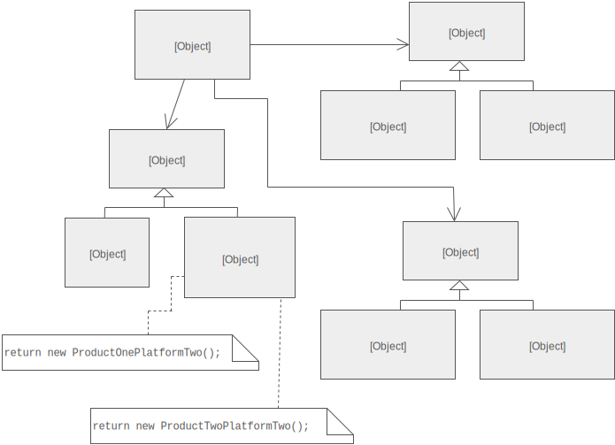
工厂方法模式中，类的创建依赖工厂类，如果想要扩展程序，必须对工厂类进行修改，这违背了闭包原则；抽象工厂模式使用多个继承自同一工厂接口的工厂类，一旦需要增加新的功能，可以直接增加新的工厂类。
2.1.1 示例
// 产品接口 public interface Sender { public void Send(); } // 产品实现 public class MailSender implements Sender { @Override public void Send() { System.out.println("this is mailsender!"); } } public class SmsSender implements Sender { @Override public void Send() { System.out.println("this is sms sender!"); } } // 工厂接口 public interface Provider { public Sender produce(); } // 工厂实现 public class SendMailFactory implements Provider { @Override public Sender produce() { return new MailSender(); } } public class SendSmsFactory implements Provider { @Override public Sender produce() { return new SmsSender(); } } // 使用 public class Test { public static void main(String[] args) { Provider provider = new SendMailFactory(); Sender sender = provider.produce(); sender.Send(); } }
2.2 工厂方法

| 应用场景： | 大量的对象需要创建，并且具有共同的接口，可以被多态调用 |
|---|---|
| 例子： | 内存池、线程池、连接池等池化技术 |
| Unix 下的硬件都工厂化为文件，提供 read/write 等方法操作任意设备的 I/O |
// 产品接口 public interface Sender { public void Send(); } // 产品实现 public class MailSender implements Sender { @Override public void Send() { System.out.println("this is mailsender!"); } } public class SmsSender implements Sender { @Override public void Send() { System.out.println("this is sms sender!"); } } // 工厂类 public class SendFactory { public Sender produce(String type) { if ("mail".equals(type)) { return new MailSender(); } else if ("sms".equals(type)) { return new SmsSender(); } else { System.out.println("请输入正确的类型!"); return null; } } } // 使用 public class FactoryTest { public static void main(String[] args) { SendFactory factory = new SendFactory(); Sender sender = factory.produce("sms"); sender.Send(); } }
// 工厂类 public class SendFactory { public Sender produceMail() { return new MailSender(); } public Sender produceSms() { return new SmsSender(); } } // 使用 public class FactoryTest { public static void main(String[] args) { SendFactory factory = new SendFactory(); Sender sender = factory.produce("sms"); sender.Send(); } }
// 工厂类 public class SendFactory { public static Sender produceMail() { return new MailSender(); } public static Sender produceSms() { return new SmsSender(); } } // 使用 public class FactoryTest { public static void main(String[] args) { Sender sender = SendFactory.produceMail(); sender.Send(); } }
2.3 单例

| 应用场景： | 需要保证某个类只有一个实例存在 |
|---|---|
| 减少某些大型的类的对象创建产生的系统开销 | |
| 例子： | 交易所的核心交易引擎 |
| 全局变量 | |
| 单例进程（通过锁文件实现） |
public class Singleton { /* 持有私有静态实例，防止被引用，此处赋值为null，目的是实现延迟加载 */ private static Singleton instance = null; /* 私有构造方法，防止被实例化 */ private Singleton() { } /* 静态工程方法，创建实例 */ public static Singleton getInstance() { if (instance == null) { instance = new Singleton(); } return instance; } /* 如果该对象被用于序列化，可以保证对象在序列化前后保持一致 */ public Object readResolve() { return instance; } }
多线程环境下，第一次创建对象时需要加锁
public static Singleton getInstance() { if (instance == null) { synchronized (instance) { if (instance == null) { instance = new Singleton(); } } } return instance; }
2.4 Builder
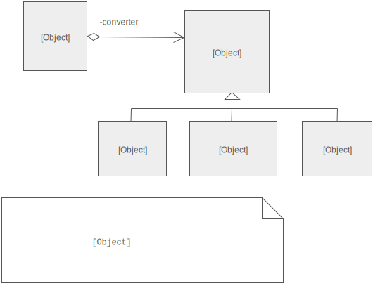
将（抽象）工厂模式和使用结合起来，工厂模式关注的是创建单个产品，建造者模式则关注创建多个（复合）对象。
2.4.1 示例
// 产品接口 public interface Sender { public void Send(); } // 产品实现 public class MailSender implements Sender { @Override public void Send() { System.out.println("this is mailsender!"); } } public class SmsSender implements Sender { @Override public void Send() { System.out.println("this is sms sender!"); } } // 建造者 public class Builder { private List<Sender> list = new ArrayList<Sender>(); public void produceMailSender(int count) { for(int i=0; i<count; i++){ list.add(new MailSender()); } } public void produceSmsSender(int count) { for(int i=0; i<count; i++){ list.add(new SmsSender()); } } } // 使用 public class Test { public static void main(String[] args) { Builder builder = new Builder(); builder.produceMailSender(10); } }
2.5 原型
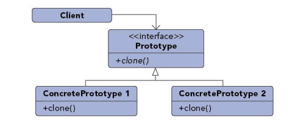
| 应用场景： | 将一个对象作为原型，对其进行复制、克隆，产生一个类似的新对象 |
|---|---|
| 例子： | Unix fork 进程 |
| GitHub fork 代码库 |
// 原型类 // 实现 Cloneable 接口，覆写 clone() 方法 public class Prototype implements Cloneable { public Object clone() throws CloneNotSupportedException { Prototype proto = (Prototype) super.clone(); return proto; } }
3 Structural
| Adapter | 适配器 |
|---|---|
| Bridge | 桥接 |
| Composite | 组合 |
| Decorator | 装饰器 |
| Facade | 外观 |
| Flyweight | 享元 |
| Proxy | 代理 |
3.1 Adapter
将旧接口转换（封装）成客户端期望的新接口，消除由于接口不匹配造成的兼容性问题。
3.1.1 关系
- Bridge
- Adapter makes things work after they're designed. Bridge makes them work before they are.
- Bridge is designed up-front to let the abstraction and the implementation vary independently. Adapter is retrofitted to make unrelated classes work together.
- Decorator
- Adapter provides a different interface to its subject. Decorator provides an enhanced interface.
- Adapter is meant to change the interface of an existing object. Decorator enhances another object without changing its interface.
- Decorator is more transparent to the application than an adapter is.
- Decorator supports recursive composition, which isn't possible with pure Adapters.
- Facade
- Facade defines a new interface, whereas Adapter reuses an old interface. Adapter makes two existing interfaces work together as opposed to defining an entirely new one.
- Proxy
- Adapter provides a different interface to its subject. Proxy provides the same interface.
3.1.2 示例
typedef int Coordinate; typedef int Dimension; // Desired interface class Rectangle { public: virtual void draw() = 0; }; // Legacy component class LegacyRectangle { Coordinate _x1, _y1, _x2, _y2; public: LegacyRectangle(Coordinate x1, Coordinate y1, Coordinate x2, Coordinate y2): _x1(x1), _y1(y1), _x2(x2), _y2(y2) {} void oldDraw() { cout << "Rectangle: (" << _x1 << "," << _y1 << ") => (" << _x2 << "," << _y2 << ")" << endl; } }; // Adapter wrapper class RectangleAdapter: public Rectangle, private LegacyRectangle { public: RectangleAdapter(Coordinate x, Coordinate y, Dimension w, Dimension h): LegacyRectangle(x, y, x + w, y + h) {} virtual void draw() { oldDraw(); } }; int main() { Rectangle *r = new RectangleAdapter(120, 200, 60, 40); r->draw(); }
3.2 Bridge

- Decouple an abstraction from its implementation so that the two can vary independently.
- Publish interface in an inheritance hierarchy, and bury implementation in its own inheritance hierarchy.
| 例子 | 连接数据库的扩展，对外提供统一接口，内部为每个数据库提供各自的实现。 |
3.2.1 问题
假设有两种线程调度器和两个平台，需要为每个平台分别实现两种调度器：
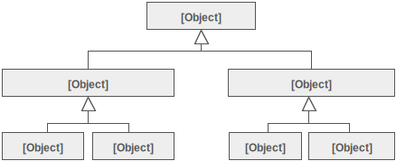
如果需要加入一个新的平台，类关系将变为：
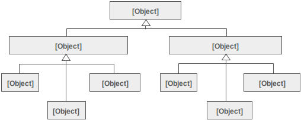
桥接模式通过将抽象与实现解耦，将继承关系分为两部分：与平台无关的抽象，和与平台有关的实现：
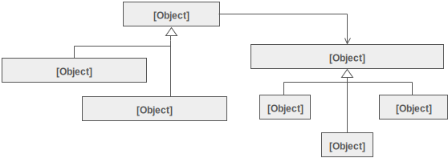
3.2.2 特点
- 有两个正交（orthogonal）的、各自独立发展的维度，如：abstraction/platform，front-end/back-end，interface/implementation。
- 接口（面向用户）基类有一个实现（向用户隐藏）基类的指针，使用时会指向实例化的实现类的对象。
3.2.3 关系
State, Strategy, Bridge (and to some degree Adapter) have similar solution structures. They all share elements of the "handle/body" idiom. They differ in intent, and solve different problems.
- Abstarct Factory
- If interface classes delegate the creation of their implementation classes (instead of creating/coupling themselves directly), then the design usually uses the Abstract Factory pattern to create the implementation objects.
- Adapter
- Adapter makes things work after they're designed; Bridge makes them work before they are.
- Bridge is designed up-front to let the abstraction and the implementation vary independently. Adapter is retrofitted to make unrelated classes work together.
- State
- The structure of State and Bridge are identical, except that Bridge admits hierarchies of envelope classes, whereas State allows only one.
- They solve different problems: State allows an object's behavior to change along with its state, while Bridge's intent is to decouple an abstraction from its implementation so that the two can vary independently.
3.2.4 示例
/***** Implementation *****/ class TimeImp { protected: int hour, minute; public: TimeImp(int h, int m): hour(h), minute(m) {} virtual void tell() = 0; }; class HumanTimeImp: public TimeImp { protected: string ampm; public: HumanTimeImp(int h, int m): TimeImp(h, m) { if (h > 12) hour -= 12, ampm = "PM"; else ampm = "AM"; } virtual void tell() { cout << "Time is " << hour << ":" << minute << " " << ampm << endl; } }; class MachineTimeImp: public TimeImp { public: MachineTimeImp(int h, int m): TimeImp(h, m) {} virtual void tell() { cout << "Time is " << hour << minute << endl; } }; /***** Interface *****/ class Time { protected: TimeImp* imp; public: Time() {} virtual ~Time() = 0; virtual void tell() { imp->tell(); } }; Time::~Time() {} class CivilianTime: public Time { public: CivilianTime(int hour, int minute) { imp = new HumanTimeImp(hour, minute); } }; class MilitaryTime: public Time { public: MilitaryTime(int hour, int minute) { imp = new MachineTimeImp(hour, minute); } }; int main() { Time* time1 = new CivilianTime(14, 30); Time* time2 = new MilitaryTime(14, 30); time1->tell(); // Time is 2:30 PM time2->tell(); // Time is 1430 return 0; }
3.3 Composite
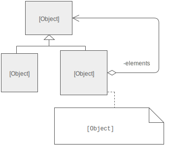
- Compose objects into tree structures, and lets clients treat individual objects and compositions of objects uniformly.
- 例子：文件夹包含若干条目，有些条目本身又是文件夹。
3.3.1 特点
- Abstract base class defines the behavior to be exercised uniformly across primitive and composite objects.
- Primitive and Composite classes are subclasses of base class.
- Each Composite object "couples" itself to the abstract type as it manages its "children".
- Child management methods
addChild()andremoveChild()should normally be defined in the Composite class. Unfortunately, the desire to treat Primitive and Composite objects uniformly may require that these methods be promoted to the abstract class.
3.3.2 关系
- Chain of Responsibility
- Composite could use Chain of Responsibility to let components access global properties through their parent.
- Decorator
- Composite and Decorator have similar structure diagrams, reflecting the fact that both rely on recursive composition to organize an open-ended number of objects.
- Decorator is designed to add responsibilities to objects without subclassing. Composite's focus is not on embellishment but on representation. These intents are distinct but complementary. Consequently, Composite and Decorator are often used in concert.
- Composite could use Decorator to override global properties on parts of the composition.
- Flyweight
- Flyweight is often combined with Composite to implement shared leaf nodes.
- Iterator
- Composite can be traversed with Iterator.
- Mediator
- Composite can compose a Mediator out of smaller pieces through recursive composition.
- Observer
- Composite could use Observer to tie one object structure to another.
- State
- Composite could use State to let a component change its behavior as its state changes.
- Visitor
- Visitor can apply an operation over a Composite.
3.3.3 示例
class Descriptor { protected: string name; public: Descriptor(string s): name(s) {} virtual void display(int i = 0) { cout << string(i, ' ') << name << endl; }; }; class File: public Descriptor { public: File(string s): Descriptor(s) {} }; class Directory: public Descriptor { vector<Descriptor*> children; public: Directory(string s): Descriptor(s) {} void add(Descriptor* d) { children.push_back(d); } virtual void display(int i = 0) { Descriptor::display(i); for (auto d: children) d->display(i + 2); } }; int main() { Directory* d1 = new Directory("dir1/"); Directory* d2 = new Directory("dir2/"); File* f1 = new File("file1"); File* f2 = new File("file2"); File* f3 = new File("file3"); d1->add(f1); d1->add(d2); d2->add(f2); d2->add(f3); d1->display(); f2->display(); return 0; } // dir1/ // file1 // dir2/ // file2 // file3 // file2
3.4 Decorator
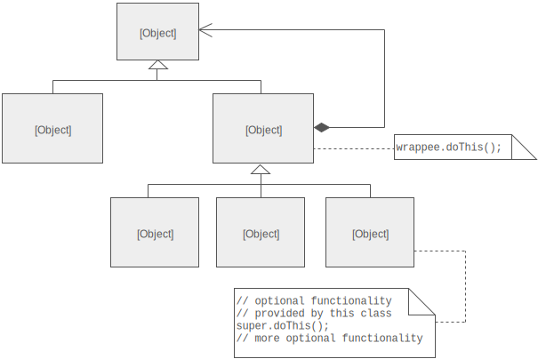
- Attach additional responsibilities to an object dynamically.
- Client-specified embellishment of a core object by recursively wrapping it.
- Provide a flexible alternative to subclassing for extending functionality.
3.4.1 问题
Suppose a UI toolkit supporting adding borders and scroll bars to windows. If implemented by inheritance:
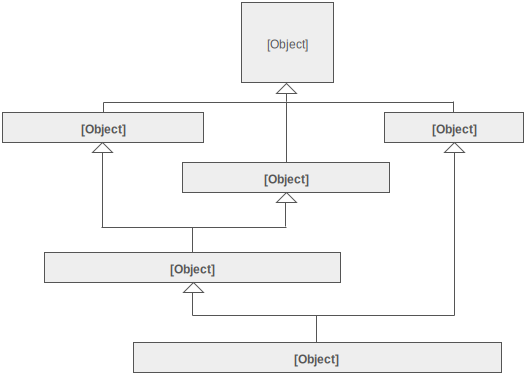
To achieve the same flexibility with Decorator pattern:
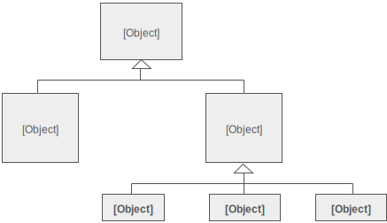
Widget* widget = new BorderDecorator( new HorizontalScrollBarDecorator( new VerticalScrollBarDecorator( new Window(80, 24)))); widget->draw();
3.4.2 特点
- Encapsulating the original object inside an abstract wrapper interface.
- Both decorator objects and the core object inherit from this abstract interface.
- Each decorator class always delegate to the Decorator base class.
- The interface uses recursive composition to allow an unlimited number of decorator "layers" to be added to each core object.
- The interface presented to client must remain constant as successive layers are specified.
3.4.3 关系
- Adapter
- Adapter provides a different interface to its subject. Proxy provides the same interface. Decorator provides an enhanced interface.
- Adapter changes an object's interface, Decorator enhances an object's responsibilities. Decorator is more transparent to the client.
- Decorator supports recursive composition, which isn't possible with pure Adapters.
- Chain of Responsibility
- Composite could use Chain of Responsibility to let components access global properties through their parent. It could also use Decorator to override these properties on parts of the composition.
- Composite
- Composite and Decorator have similar structure diagrams. Both rely on recursive composition to organize an open-ended number of objects.
- A Decorator can be viewed as a degenerate Composite with only one component. However, a Decorator adds additional responsibilities, it isn't intended for object aggregation.
- Decorator is designed to add responsibilities to objects without subclassing. Composite's focus is not on embellishment but on representation. Composite and Decorator are often used in concert.
- Proxy
- Decorator and Proxy have different purposes but similar structures. Both describe how to provide a level of indirection to another object, and the implementations keep a reference to the object to which they forward requests.
- Strategy
- Decorator lets you change the skin of an object. Strategy lets you change the guts.
3.4.4 示例
class Explosive { public: virtual void explode() = 0; }; // Core class class Fireworks: public Explosive { public: virtual void explode() { cout << "Firework explodes" << endl; } }; // Base decorator class: // - Sibling of core class // - Parent of concrete decorator classes class Decorator: public Explosive { // Core class pointer Explosive* exp; public: Decorator(Explosive* e): exp(e) {} virtual void explode() { // Delegate to core class exp->explode(); } }; class RedLayer: public Decorator { public: RedLayer(Explosive* e): Decorator(e) {} virtual void explode() { // Delegate to base class Decorator::explode(); // Enhancement cout << "Red light glows" << endl; } }; class YellowLayer: public Decorator { public: YellowLayer(Explosive* e): Decorator(e) {} virtual void explode() { Decorator::explode(); cout << "Yellow light glows" << endl; } }; int main() { // Compose desired configuration Explosive* e = new RedLayer(new YellowLayer(new RedLayer(new Fireworks()))); e->explode(); // Firework explodes // Red light glows // Yellow light glows // Red light glows return 0; }
3.5 Proxy
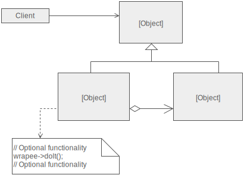
- 方法在使用时需要调整，但直接修改会违反「开闭原则」，通过代理类，调用并扩展原有方法，可对产生的结果进行控制。
- 通过代理，使业务模块只关注业务，非业务的逻辑（如权限控制）由代理负责，以完成解耦。
- Add a wrapper and delegation to protect the real component from undue complexity.
- Use an extra level of indirection to support distributed, controlled, or intelligent access.
3.5.1 使用
- As placeholder for "expensive" objects. The real object is only created when a client first requests/accesses it.
- As local representative for a remote object that resides in a different address space. E.g. RPC and CORBA stub.
- As protective layer which controls access to a sensitive object. The proxy checks that the caller has the access permissions required.
- A smart proxy interposes additional actions when an object is accessed:
- Counting the number of references to the real object and free up when no references exist (aka smart pointer).
- Loading a persistent object into memory when it's first referenced.
- Checking that the real object is locked before it is accessed.
3.5.2 特点
- Proxy holds a pointer to the real class and implements the interface.
- Proxy instantiates the real object the first time the client makes a request of the proxy.
- Proxy forwards all subsequent requests to the encapsulated real object.
3.5.3 关系
- Adapter
- Adapter provides a different interface to its subject. Proxy provides the same interface. Decorator provides an enhanced interface.
- Decorator
- Decorator and Proxy have different purposes but similar structures. Both describe how to provide a level of indirection to another object, and the implementations keep a reference to the object to which they forward requests.
3.5.4 示例
// Real class class Data { int data[3]; public: Data() { data[0] = 1; data[1] = 3; data[2] = 5; } int read(int s) { return data[s]; } }; // Proxy class class DataProxy { Data* real; int clearance; public: DataProxy(int c): clearance(c), real(NULL) {} // Same interface as real class int read(int sector) { // Checking clearance and sector values // Do not call real object's method if illegal if (clearance < 3 || sector > 2) return -1; // Instantiate real object if (!real) real = new Data; // Delegate call to real object return real->read(sector); } }; DataProxy dp1(1); cout << dp1.read(1) << endl; // -1, not enough clearance DataProxy dp2(3); cout << dp2.read(3) << endl; // -1, wrong sector DataProxy dp3(4); cout << dp3.read(2) << endl; // 5
3.6 外观
| 应用场景： | 将相关类（和依赖关系）包装在一个类中，降低相关的类之间的依赖关系，解耦合 |
|---|---|
| 例子： | IT 公司将主机、存储、OS、J2EE、DB、网络、流程打包成为企业级解决方案 |
| Shell 命令通过标准 I/O 接口进行交互，可以组合成脚本实现一个复杂功能 |
3.6.1 Java 示例
public class CPU { public void startup() { System.out.println("cpu startup!"); } } public class Memory { public void startup() { System.out.println("memory startup!"); } } public class Disk { public void startup() { System.out.println("disk startup!"); } }
public class Computer { private CPU cpu; private Memory memory; private Disk disk; public Computer() { cpu = new CPU(); memory = new Memory(); disk = new Disk(); } public void startup() { System.out.println("start the computer!"); cpu.startup(); memory.startup(); disk.startup(); System.out.println("start computer finished!"); } }
public class User { public static void main(String[] args) { Computer computer = new Computer(); computer.startup(); computer.shutdown(); } }
4 Behavioral
| Chain of responsibility | 责任链 |
|---|---|
| Command | 命令 |
| Iterator | 迭代子 |
| Observer | 观察者 |
| Publish & subscribe | |
| Strategy | 策略 |
| Template method | 模板方法 |
| Visitor | 访问者 |
4.1 Chain of Responsibility
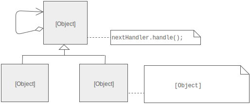
- Chain the receiving objects and pass the request along the chain until an object handles it.
- 用于存在不定数量的接收（处理）器、且客户端不知道指定哪一个接收器时。
- 可以在不影响客户端的情况下，动态地重新组织和分配责任。
- 例子：异常处理机制，向上层传递异常直到被捕获。
4.1.1 特点
- Processing elements are encapsulated inside a "pipeline" abstraction.
- Each sender keeps a single reference to the head of the chain.
- Each receiver (processing element) keeps a single reference to its immediate successor.
- A "safety net" to "catch" any requests which go unhandled.
4.1.2 关系
Chain of Responsibility, Command, Mediator, and Observer, address how to decouple senders and receivers, but with different trade-offs. Chain of Responsibility passes a sender request along a chain of potential receivers.
- Command
- Chain of Responsibility can use Command to represent requests as objects.
- Composite
- Chain of Responsibility is often applied in conjunction with Composite. There, a component's parent can act as its successor.
4.1.3 示例
class Error { public: string type, message; Error(string t, string m): type(t), message(m) {} }; class Handler { Handler* next; public: Handler() { next = NULL; } void chain(Handler* h) { if (next) next->chain(h); else next = h; } virtual void handle(Error* e) { if (next) // Delegate to next handler next->handle(e); else cout << "End of chain, error not handled: " << e->message << endl; } }; class NormalHandler: public Handler { public: virtual void handle(Error* e) { if (e->type.compare("normal") == 0) // Can handle cout << "Normal error handled: " << e->message << endl; else // Cannot handle Handler::handle(e); } }; class CriticalHandler: public Handler { public: virtual void handle(Error* e) { if (e->type.compare("critical") == 0) cout << "Critical error handled: " << e->message << endl; else Handler::handle(e); } }; int main() { Error* e1 = new Error("normal", "A normal error"); Error* e2 = new Error("critical", "A critical error"); Error* e3 = new Error("unexpected", "An unexpected error"); NormalHandler h1; CriticalHandler h2; h1.handle(e1); // Normal error handled: A normal error h1.handle(e2); // End of chain, error not handled: A critical error // Extend chain h1.chain(&h2); h1.handle(e2); // Critical error handled: A critical error h1.handle(e3); // End of chain, error not handled: An unexpected error return 0; }
4.2 Iterator
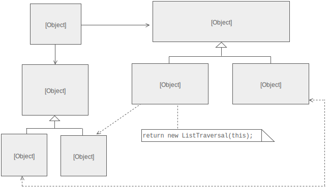
- Provide a way to access the elements of an aggregate object sequentially without exposing its underlying representation.
- Take the responsibility for access and traversal out of the aggregate object and put it into an Iterator object that defines a standard traversal protocol.
4.2.1 特点
Collectionclass hascreate_iterator()method, which grants theIteratorclass privileged access to the elements.Iteratorclass encapsulates traversal ofCollectionclass.- Clients ask
Collectionobject to create anIteratorobject. - Clients use
first(),is_done(),next(), andcurrent_item()protocol to access the elements ofCollectionclass.
4.2.2 关系
- Factory Method
- Polymorphic Iterators rely on Factory Methods to instantiate the appropriate Iterator subclass.
- Memento
- Memento is often used in conjunction with Iterator. An Iterator can use a Memento to capture the state of an iteration. The Iterator stores the Memento internally.
- Visitor
- The abstract syntax tree of Interpreter is a Composite, therefore Iterator and Visitor are also applicable.
- Iterator can traverse a Composite. Visitor can apply an operation over a Composite.
4.2.3 示例
// Forward declaration class Iterator; class Collection { friend class Iterator; int items[10]; int ptr; public: Collection() { ptr = -1; } void push(int n) { items[++ptr] = n; } int pop() { return items[ptr--]; } bool empty() { return ptr == -1; } // 只能声明方法，因为 Iterator 类未定义 Iterator* iterator() const; }; class Iterator { const Collection* col; int idx; public: Iterator(const Collection* c): col(c) {} void first() { idx = 0; } void last() { idx = col->ptr; } void next() { idx++; } bool done() { return idx == col->ptr + 1; } int current() { return col->items[idx]; } }; Iterator* Collection::iterator() const { return new Iterator(this); } int main() { Collection col; for (int i = 0; i < 10; i++) col.push(i * 2 + 1); Iterator* itr = col.iterator(); for (itr->first(); !itr->done(); itr->next()) cout << itr->current() << endl; return 0; }
4.3 命令
| 应用场景： | 把对象的行为封装成相同接口的命令，由命令执行器执行或管理 |
|---|---|
| 命令、命令发出者、命令执行者之间相互解耦 | |
| 例子： | 将 daemon 的行为封装成脚本，支持 start/stop/status 等命令，由操作系统接管 daemon 的启动和退出 |
4.3.1 Java 示例
public interface Command { void execute(); }
public class ConcreteCommand implements Command { private Receiver receiver = null; public ConcreteCommand(Receiver receiver) { this.receiver = receiver; } @Override public void execute() { receiver.action(); } }
public class Invoker { private Command command = null; public Invoker(Command command) { this.command = command; } public void action() { command.execute(); } }
public class Receiver { public void action() { System.out.println("Execute action."); } }
public class Client { public static void main(String[] args) { Receiver receiver = new Receiver(); Command command = new ConcreteCommand(receiver); Invoker invoker = new Invoker(command); invoker.action(); } }
4.4 观察者
| 应用场景： | 多个观察者同时监听一个主题，主题对象在状态上发生变化时，会通知所有观察者对象 |
|---|---|
| 例子： |
4.4.1 Java 实现
public interface Observer { public void update(String state); }
public class ConcreteObserver implements Observer { private String observerState; @Override public void update(String state) { observerState = state; } }
public interface Subject { public void attach(Observer observer); public void detach(Observer observer); public void notify(); }
public abstract class AbstractSubject implements Subject { private List<Observer> list = new ArrayList<Observer>(); public void attach(Observer observer){ list.add(observer); } public void detach(Observer observer){ list.remove(observer); } public void nodify(String newState){ for(Observer observer : list){ observer.update(newState); } } }
public class ConcreteSubject { private String subjectState; public void change(String newState){ subjectState = newState; this.nodify(subjectState); } }
public class Client { public static void main(String[] args) { ConcreteSubject subject = new ConcreteSubject(); Observer observer = new ConcreteObserver(); subject.attach(observer); subject.change("new state"); } }
4.5 策略
| 应用场景： | 一组相关但不同的算法，分别封装起来，使它们可以相互替换 |
|---|---|
| 例子： |
4.5.1 Java 示例
interface Strategy { void execute(); }
class FirstStrategy implements Strategy { public void execute() { System.out.println("Called FirstStrategy.execute()"); } } class SecondStrategy implements Strategy { public void execute() { System.out.println("Called SecondStrategy.execute()"); } }
class Context { Strategy strategy; public Context(Strategy strategy) { this.strategy = strategy; } public void execute() { this.strategy.execute(); } }
class StrategyExample { public static void main(String[] args) { Context context; context = new Context(new FirstStrategy()); context.execute(); context = new Context(new SecondStrategy()); context.execute(); } }
4.6 访问者
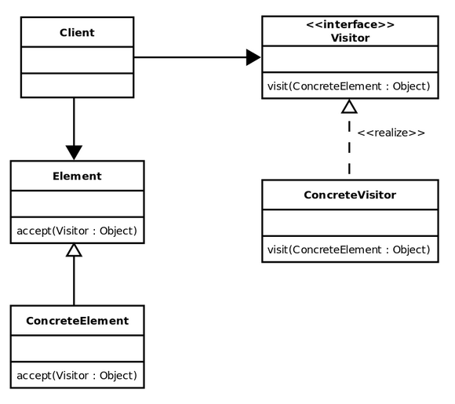
5 依赖
5.1 依赖注入
- Dependency Injection (DI)
- 从硬编码的依赖中解耦，在运行、编译时能够修改的设计模式。
// Before class Database { protected $adapter; public function __construct() { $this->adapter = new MySqlAdapter; // 耦合，测试困难 } } // After class Database { protected $adapter; public function __construct(MySqlAdapter $adapter) { $this->adapter = $adapter; // 通过依赖注入解耦 } }
5.2 依赖反转
- Inversion of Control (IoC)
- 对接口编程，依赖于抽象而不是具体，即依赖于约定、接口、抽象类，而不是具体实现。
// Before class Database { protected $adapter; public function __construct() { $this->adapter = new MySqlAdapter; // 耦合，测试困难 } } // After class Database { protected $adapter; public function __construct(AdapterInterface $adapter) { // 依赖于接口 $this->adapter = $adapter; } }
6 Quote
设计模式就三个准则：1）中意于组合而不是继承，2）依赖于接口而不是实现，3）高内聚，低耦合。Source
桥接（Bridge）和策略（Strategy）模式对应 OO 设计模式里的「Favor Composition Over Inheritance」，实现了接口与实现分离的。……把程序分为前端和后端，通过 socket 专用应用协议进行通讯，前端实现策略，后端实现机制。……makefile 把编译器和源代码的解耦……大量的编程框架都多少采用这样的思想，可以像更换汽车零件一样方便地更换具体实现。Source
开发软件采用 top-down 或 bottom-up 的模式，都有优缺点。顶层一般是应用逻辑层，底层一般是原语层（技术沉淀层）。自顶向下的开发，可能会发现底层被很多业务逻辑所侵入，如果自底向上的开发，又可能会发现下层的基础工作有很多用不上。最好的方式是同时进行，在开发中不断的重构，边开发，边理解，边沉淀。……需要胶合层，来胶合业务层和技术层。……策略（业务逻辑）和机制（基础技术或原语）的分离。……OO 用抽象接口来做分离，……但 OO 鼓励了「厚重地胶合和复杂层次」，反而增加了程序的复杂度。而 Unix 采用的是薄的胶合层，薄地相当的优雅。Source